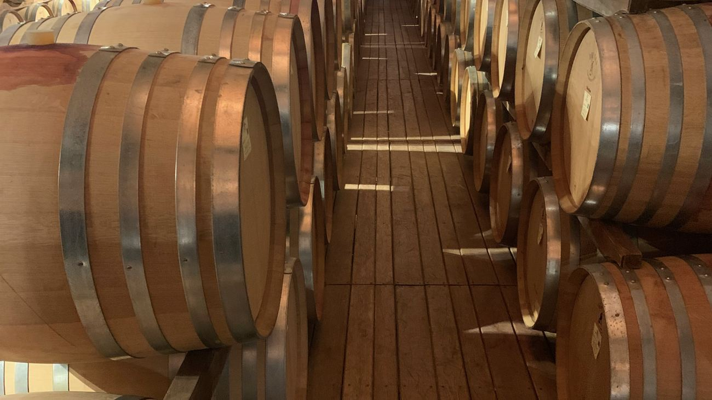

01
Servizi enologici
Dall’uva a un vino finito, stabile e vendibile. Protocolli costruiti sulla varietà, sull’annata e sul mercato a cui ci si vuole rivolgere.
- Enologia varietale e protocolli di vinificazione
- Sistemi di gestione qualità e certificazioni
- Marketing del vino, posizionamento e gamma